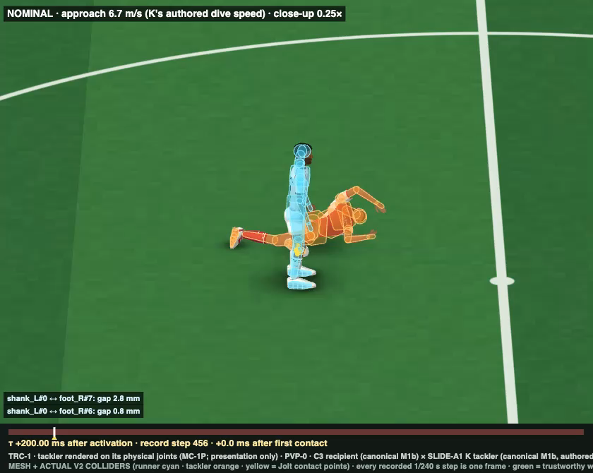
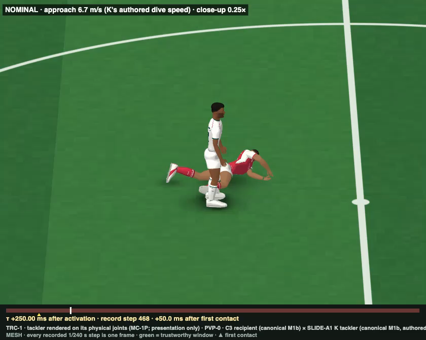
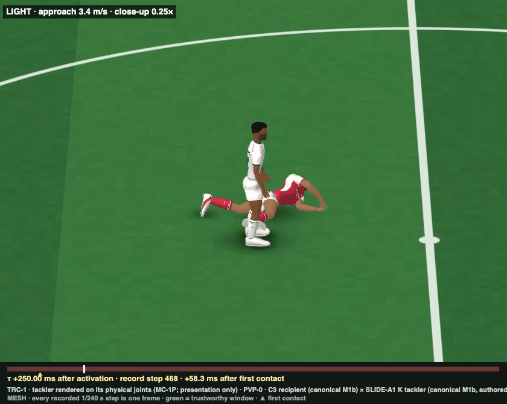
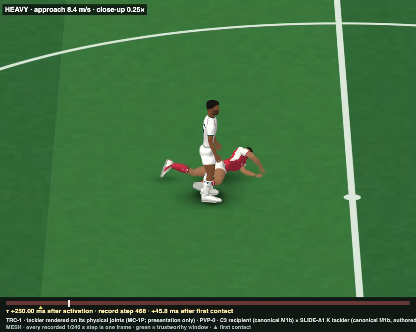
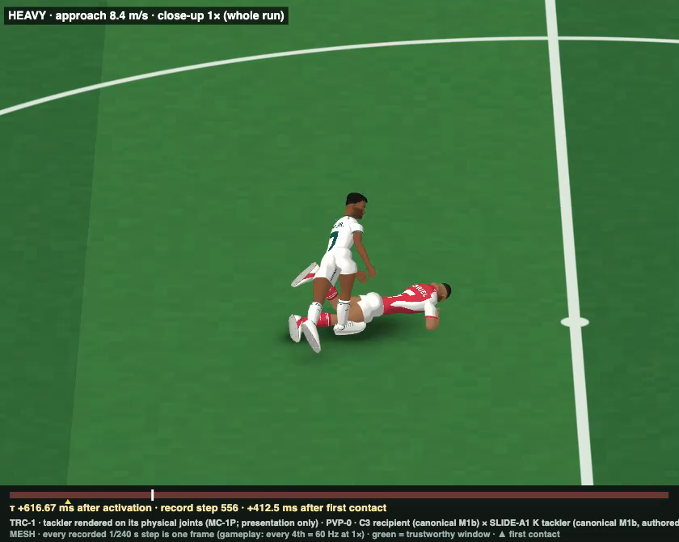
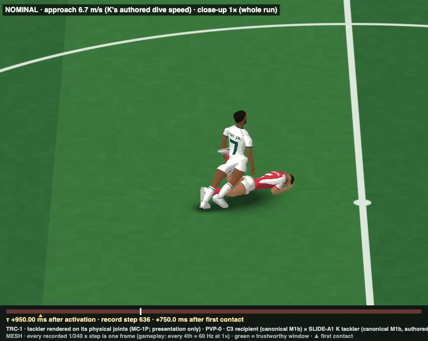
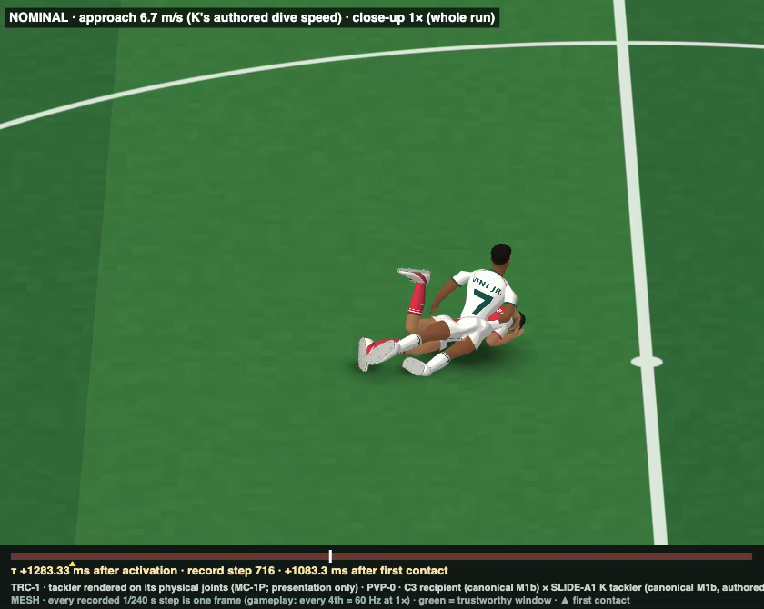
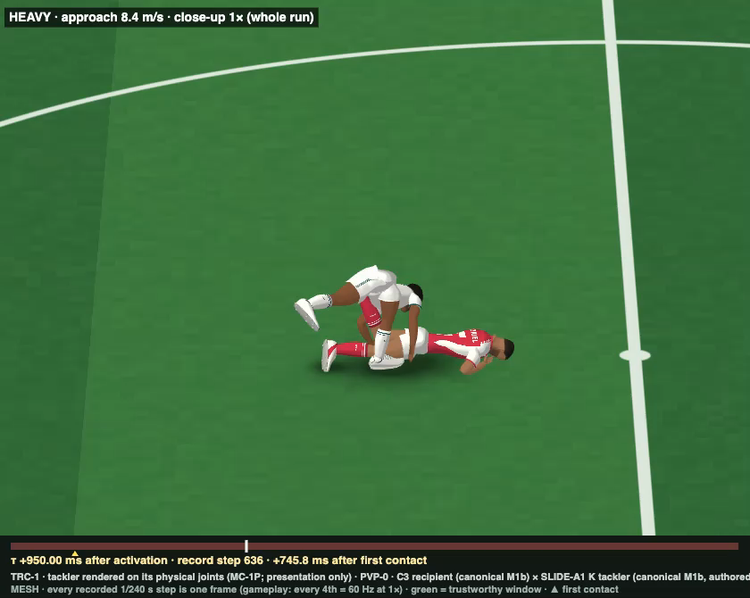
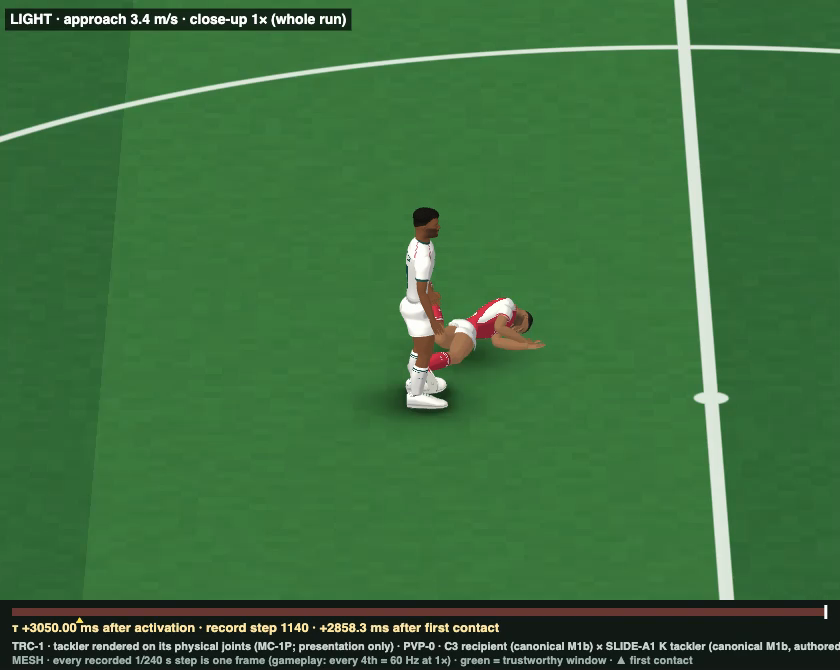
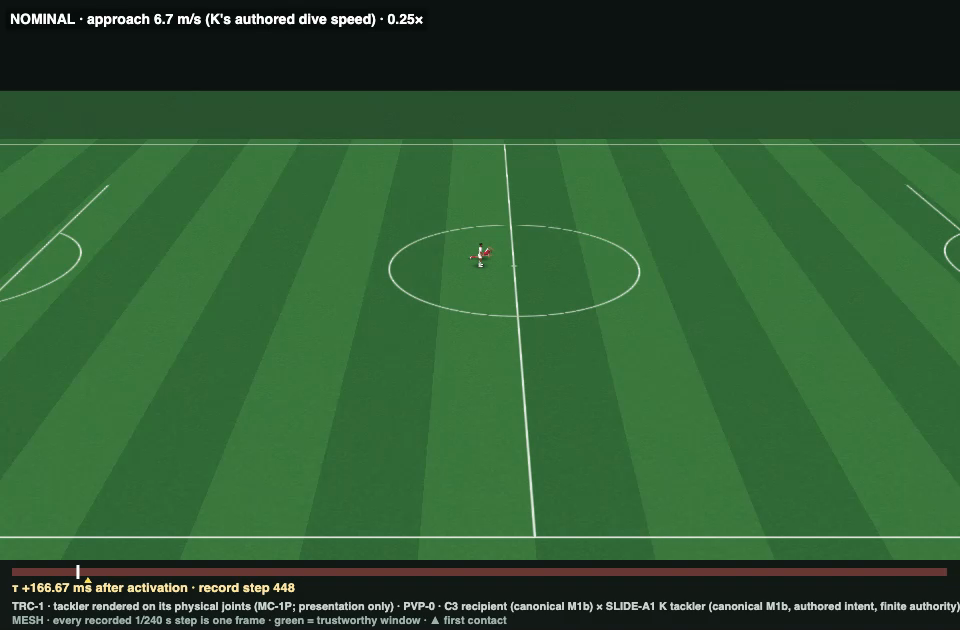

| PVP-0 CONTACT PHYSICS | PARTIAL |
|---|---|
| PVP-0 VISUAL RESPONSE | FAIL |
| TACKLER REMAINS RECOGNIZABLE | NO |
| RECIPIENT RESPONSE PLAUSIBLE | NO |
| READY FOR NEXT PVP ITERATION | NO |
Inputs: recipient = C3 exactly as frozen at d590fd46 (balance2/c3/c3_ctrl.mjs + params/C3.json; unchanged at HEAD) on canonical M1b. Tackler = SLIDE-A1 candidate K at 59b7245c (Astra; Gate A open: current, not approved), physicalized as bounded posture intent through canonical M1b. Approach speeds 0.5 / 1.0 / 1.25 × K's 6.74 m/s, the only varied parameter. Verdicts, question answers and problem rankings are Claude's judgment from the stills and close-ups cited and the evidence files.










| Question | Answer | Evidence | Owner |
|---|---|---|---|
| 1. Does the leg genuinely hit, not phase through? | YES | Real contact every time. First contact is the tackler's right boot on the recipient's left shin (LIGHT 0.1917 s, NOMINAL 0.2 s, HEAVY 0.2042 s after activation), 35 / 28 / 26 cm above the turf. Strike-window penetration is 1.7 / 3.7 / 4.0 mm, inside Jolt's 5 mm slop. In the collider close-ups (KD stills) the boot meets the shin at 0.8–2.8 mm separation, with Jolt contact points. | – |
| 2. Does the struck leg yield? | YES (pinned) | The struck ankle deviates from the twin by 36.9 / 32.9 / 35.8°, the knee by 16.3 / 21.4 / 18.8° and the hip by 7.7 / 50.1 / 52.0°. In LIGHT the ankle stays about 34° deflected for the whole 4 s, because the tackler stays pressed against it. It never yields and recovers. | TACKLER PHYSICAL TRACKING (holds the press) |
| 3. Does propagation run leg → pelvis → trunk? | YES | Delay after first contact before each segment's angular velocity departs from the twin by more than 0.5 rad/s: pelvis 16.7 / 4.2 / 4.2 ms, thorax 37.5 / 25 / 16.7 ms, head 58.3 / 41.7 / 37.5 ms. The order is right. Visually, the upper-body response in LIGHT is small. | – |
| 4. Does C3 attempt to balance? | YES, without stepping | C3 shifts the load off the struck foot (LIGHT, at +0.8 s: left/right 115 / 743 N, against 369 / 358 N standing). It holds a 120 mm COM offset without saturating (0 saturated steps). NOMINAL and HEAVY saturate for 907 and 882 steps. It never steps (C3 is the no-step baseline) and never uses the arms. | RECIPIENT BALANCE (no step, no arms) |
| 5. Does the recipient sometimes remain standing? | YES (LIGHT), pinned | LIGHT stays up for the whole run. The COM ends 95 mm off the twin and the trunk tilts 7.7°. But the tackler stays wedged against his left foot, with a 260–500 N cross force for over 3 s (PVP0_DETAIL trace), so he never recovers. Still: KL_LIGHT_k186. | TACKLER PHYSICAL TRACKING + RECIPIENT BALANCE |
| 6. Can strong contact make him fall? | YES | NOMINAL falls at 0.958 s after activation: the left foot is trapped behind the prone tackler, and he sits down onto the tackler's back (KL_NOMINAL_k60, k80). HEAVY: the left foot is swept and unloaded from about 0.6 s, he hops over on the right foot, then is lifted by the tackler's upturned left leg. That pair carries 522 N·s, and the net cross impulse on him is +639 N·s upward. He falls at 1.496 s and ends with the trunk at 143° (KL_HEAVY_k40–k186). Both falls emerge from contact; neither is scripted. | PLAYER-PLAYER CONTACT (emergent); flip caused by TACKLER PHYSICAL TRACKING |
| 7. Does the tackler react to hitting another mass? | PARTLY | The tackling leg deflects. NOMINAL against CALIB (no recipient; identical up to contact, 0.00° apart the step before): ankle_R 53.3° and knee_R 18.9° within 50 ms, hip_R 5° within 100 ms. The slide shortens: CALIB travels 2.95 m, NOMINAL 2.14 m, and LIGHT stops dead at his foot after 0.82 m. But the body's response at contact is the tackler's own landing. In the same 100 ms it loses 3.27 m/s horizontally, against 3.09 m/s with no contact at all. The cross impulse is about 75 N·s; the turf impulse is 220–450 N·s vertical. | TACKLER ACTION (lands at the instant of contact) |
| 8. Does the authored action survive contact? | NO, and it does not survive without contact either | The tackler rolls face-down whether or not it hits anyone. Pelvis belly normal (+1 face-up, −1 face-down): K authors about +0.19 throughout. CALIB with no contact reaches -0.996 at 500 ms and ends about 177° from the authored pelvis. NOMINAL reaches -0.935. Tracking error is 6.7 / 11.3 / 14.6° at contact and 16–22° after. | TACKLER PHYSICAL TRACKING; INTEGRATION; TACKLER ACTION |
| 9. Do joints become unnaturally stiff? | Partly | Recipient: in LIGHT he holds one bent posture for over 3 s with the struck ankle at about 34° (KL_LIGHT stills). Tackler: the left leg sticks up bent, with the left foot 0.6–0.8 m above the turf where K has it at 0.3 m, for seconds (PVP0_TACKLER_POSE). Neither is plank-rigid. Both look held. | RECIPIENT BALANCE; TACKLER PHYSICAL TRACKING |
| 10. Does either player look like a mannequin, plank or limp ragdoll? | YES | The LIGHT recipient reads as a mannequin: upright, arms at his sides, almost motionless. The NOMINAL recipient folds and sits down onto the tackler. HEAVY ends as a tangled pile. The tackler is never limp, but it reads as a rigid face-first belly-flop with the arms forward and its face in the turf (K_*_s468, KL_NOMINAL_k60). | RECIPIENT BALANCE; TACKLER PHYSICAL TRACKING |
| 11. Is there phasing? | Not at the strike; yes in sustained crushing contact | Strike window: at most 4 mm. Later, crushing contacts exceed the slop. NOMINAL: shank_L × foot_R 13.8 mm for 12 steps, and abdomen × pelvis 12.9 mm in the pile. HEAVY: shank_L × foot_R 14.2 mm, thorax × pelvis 12.1 mm for 20 steps. None of it is visible at the gameplay camera. The rendered boot envelope adds up to 16 mm (TRC-1). | PLAYER-PLAYER CONTACT (solver, sustained contact) |
| 12. Is ground contact stable? | YES after landing; the landing is violent | The recipient's feet stay planted until the fall. Turf penetration is 0.0 / 1.6 / 7.5 mm for the recipient and 1.4 / 1.7 / 2.3 mm for the tackler. The tackler hits the turf at −4.86 m/s vertical: one step carries a 103 N·s turf normal impulse, and its angular-ledger residual peaks on that step. It then slides and stops by 0.667 / 1.108 / 0.833 s with no jitter. | TACKLER ACTION; INTEGRATION (landing) |
| 13. Does it read as one footballer tackling another? | NO | At the gameplay camera (1×) the players are about 15 px tall at the centre circle and nothing reads (G1 clips). In the close-ups, a red player dives face-first into a white player's feet and stops. The white player stands like a statue (LIGHT), sits down on him (NOMINAL) or is upended over him (HEAVY). The HEAVY sweep at 0.4–0.6 s is the closest moment to a tackle. | TACKLER PHYSICAL TRACKING (main); RENDERING (scale) |
It lands hard (−4.86 m/s vertical at the instant of contact), rolls face-down into a belly-flop with the arms forward and the left leg up, and stops within about 1 s. K authors a side-on slide. CALIB proves this is not contact: the tackler alone does the same. Two upstream causes feed it. The retarget places V2's authored support foot about 13 cm above the turf where Gabriel's toe touches, so K's slowed descent becomes a free fall from 3.2 m/s. And the start had to be airborne at t 0.30, because K's run-up is not physically executable.
Owner: TACKLER PHYSICAL TRACKING (joint-space tracking cannot hold whole-body orientation, and there is no root drive by rule). Contributing: INTEGRATION (retarget vertical anchoring) and TACKLER ACTION (K's run-up and flight; K's Gate A is still open).
The tackler's tracker keeps driving the tackling leg toward K's target after the strike, so the boot stays pressed into the shin and foot (260–500 N for over 3 s in LIGHT). The recipient can neither free the foot nor step. Result: LIGHT stands pinned like a statue; NOMINAL's trapped foot makes him sit down on the tackler; HEAVY is lifted by the tackler's upturned left leg (522 N·s pelvis × shank_L) and flipped.
Owner: TACKLER PHYSICAL TRACKING (constant authority after contact: the leg deflects locally but the intent never releases). Contributing: RECIPIENT BALANCE (C3 has no step).
No step, no arm response, no hop over the boot. The struck ankle is held at about 34° for over 3 s. Under light contact the only visible response is a lean. The mechanics underneath are right (yield, ordered propagation, load shift), but nothing shows them.
Owner: RECIPIENT BALANCE (C3 is a no-step, arms-passive baseline by design; the shortfall is behavioural, not a contact-physics fault).
Also: at the actual gameplay camera (zoom 1) the event is too small to read (RENDERING; existing camera, not a regression).
| LIGHT | NOMINAL | HEAVY | ||
|---|---|---|---|---|
| Approach (horizontal COM), m/s | 3.37 | 6.74 | 8.43 | the single varied parameter (× K's 6.74 m/s); vertical −4.86 m/s at contact in every case (the tackler is landing) |
| First contact | foot_R → shank_L 0.1917 s · 35 cm high | foot_R → shank_L 0.2 s · 28 cm high | foot_R → shank_L 0.2042 s · 26 cm high | tackler body → recipient body; height of the first contact point |
| Contact normal (local) | 0.30, -0.04, 0.95 | 0.46, -0.07, 0.89 | 0.45, -0.07, 0.89 | mostly along +z: the boot strikes the side of the left shin, across his path |
| Strike 100 ms impulse on recipient, N·s | 76 [-18, -39, -62] | 74 [-16, -42, -58] | 83 [-17, -43, -69] | ≈ equal across strengths: the falling boot drags down the shin (−y) as it strikes (−z) |
| Strike peak step force, N | 1421 | 2649 | 2721 | largest single-step cross impulse in the strike window, / h |
| Run peak step force, N (step) | 1421 (458) | 8499 (716) | 7972 (512) | NOMINAL / HEAVY peaks are the bodies piling up later, not the strike |
| Peak penetration: strike / run, mm | 1.7 / 1.7 shank_L × foot_R | 3.7 / 13.8 shank_L × foot_R | 4.0 / 14.2 shank_L × foot_R | Jolt slop 5 mm |
| Recipient COM peak deviation from twin, mm | 120 | 1404 | 787 | |
| Recipient falls (pelvis drop > 150 mm), s | no | 0.958 | 1.496 | after activation |
| Recipient end | pelvis 0.92 m · trunk 8° feet 306 / 529 N | pelvis 0.13 m · trunk 88° feet 0 / 0 N | pelvis 0.51 m · trunk 143° feet 23 / 0 N | |
| Struck leg peak deviation (ankle / knee / hip), ° | 36.9 / 16.3 / 7.7 | 32.9 / 21.4 / 50.1 | 35.8 / 18.8 / 52.0 | first 0.5 s after contact, vs twin |
| Propagation pelvis / thorax / head, ms | 16.7 / 37.5 / 58.3 | 4.2 / 25 / 41.7 | 4.2 / 16.7 / 37.5 | after first contact |
| Recipient saturated steps · yield events | 0 · 871 | 907 · 7602 | 882 · 7492 | TWIN: 0 · 0. Yield events are M1b strain-arm slips, summed over axes and steps. |
| Tackler Δv horizontal in 100 ms, m/s | 2.57 | 3.27 | 3.55 | CALIB (NOMINAL speed, no contact): 3.09. Compare with NOMINAL only; LIGHT / HEAVY start slower / faster |
| Tackler travel / stop | 0.82 m · 0.667 s | 2.14 m · 1.108 s | 2.9 m · 0.833 s | CALIB (NOMINAL speed, no contact): 2.95 m · 1.058 s |
| Tackler tracking error at contact / 0.5 s / 1 s, ° | 6.7 / 16.0 / 13.5 | 11.3 / 18.5 / 18.4 | 14.6 / 17.9 / 21.9 | RMS over actuated axes, vs K target |
| Tackler saturated steps · yield events | 203 · 2683 | 271 · 4148 | 458 · 4949 | CALIB: 176 · 4135 (in 840 steps) |
| Hard-limit excess: recipient / tackler, ° | 3.0 / 13.3 | 6.5 / 16.8 | 8.9 / 18.5 | tackler: neck lateral bend 12.6–13.4° at landing (0.2 s); hip_L flex 6° in K's own start pose; ankle_R 7.5–10.7° at the strike |
| Final hash | 363ec994c97bad90 | 80fe925d6380b67b | 9376fd891f4c9cbd | NOMINAL rerun bit-identical; TWIN 2960efa781b24fb1 |
| CPU per step, ms (sim + passive + act + tone + laws) | 1.81 wall 2.43 instrumented | 1.79 wall 2.29 instrumented | 1.82 wall 2.36 instrumented | both characters, 240 Hz: about 0.43 s of CPU per simulated second |
| LIGHT | NOMINAL | HEAVY | ||
|---|---|---|---|---|
| Equal-and-opposite |ΔJ|, |ΔH| | 0 · 0 | 0 · 0 | 0 · 0 | exact |
| System linear residual, N·s | 1.7e-4 | 2.1e-4 | 3.7e-4 | closes |
| Recipient linear / angular residual | 2.3e-5 / 0.002 | 1.8e-4 / 0.017 | 9.9e-5 / 0.052 | closes |
| Tackler linear / angular residual | 1.7e-4 / 0.24 | 2.2e-4 / 0.35 | 3.7e-4 / 0.40 | angular peak on the tackler's own turf-impact step (103 N·s normal in one step), not at player contact |
| System energy residual, J | 398 | 543 | 633 | does NOT close: turf friction and impact dissipation are not ledgered |
Ledger maxima exclude step activate+1, which carries the tackler's one-time initial-condition velocity write.
| ms after activation | K phase | K (authored) | CALIB (no contact) | LIGHT | NOMINAL | HEAVY |
|---|---|---|---|---|---|---|
| 0 | SCISSOR | 0.191 | 0.191 0° | 0.191 0° | 0.191 0° | 0.191 0° |
| 150 | KNEE_EXTENSION | 0.192 | -0.003 15° | -0.003 15° | -0.003 15° | -0.003 15° |
| 200 | KNEE_EXTENSION | 0.197 | -0.072 23° | -0.054 23° | -0.071 23° | -0.076 23° |
| 250 | GROUND_ENTRY | 0.201 | -0.634 53° | -0.387 38° | -0.576 49° | -0.633 54° |
| 300 | GROUND_ENTRY | 0.198 | -0.729 60° | -0.546 46° | -0.782 64° | -0.845 70° |
| 500 | SLIDE | 0.188 | -0.996 98° | -0.524 43° | -0.935 80° | -0.895 76° |
| 1000 | FOLLOW_THROUGH | 0.184 | -0.115 174° | -0.727 59° | -0.876 78° | -0.869 87° |
| 1500 | FOLLOW_THROUGH | 0.156 | -0.143 177° | -0.733 58° | -0.952 83° | -0.643 66° |
Small figures: geodesic angle between the authored and physical pelvis orientation. The tackler rolls face-down with or without the recipient. First contact is at about 200 ms. Source: evidence/PVP0_TACKLER_POSE.json.
| K t, s | phase | Gabriel toe y | Gabriel ankle y | V2 ankle y (target) | hip mid y |
|---|---|---|---|---|---|
| 0.3 | SCISSOR | 0.166 | 0.248 | 0.315 | 0.944 |
| 0.35 | SCISSOR | 0.125 | 0.204 | 0.275 | 0.786 |
| 0.4 | KNEE_EXTENSION | 0.084 | 0.16 | 0.233 | 0.656 |
| 0.45 | KNEE_EXTENSION | 0.084 | 0.154 | 0.227 | 0.567 |
| 0.5 | KNEE_EXTENSION | 0.083 | 0.143 | 0.214 | 0.461 |
| 0.55 | GROUND_ENTRY | 0.108 | 0.144 | 0.213 | 0.325 |
| 0.6 | GROUND_ENTRY | 0.197 | 0.205 | 0.272 | 0.292 |
V2 standing ankle y = 0.088 m. V2 thigh / shank 0.446 / 0.458 m, Gabriel 0.482 / 0.442 m. During KNEE_EXTENSION, Gabriel's left toe is within about 2–5 cm of the turf and K's descent slows. The retargeted V2 ankle is 0.21–0.23 m up, about 13 cm above V2's on-turf height, so the authored support never reaches the ground. The physical tackler falls freely and lands at −4.86 m/s. Source: evidence/PVP0_K_FOOT_HEIGHT.json.
pvp0/PVP0_SETUP.json (frozen d43958e1) · pvp0/scripts/ (k, tracker, plant, run, calib_read, analyze, strike, detail, pose, kfoot, tackler_ref) · pvp0/evidence/*.json · pvp0/render/ (clip_prep, capture, review_build) · pvp0/review/video/ (VIEWS_PVP0.json, CAPTURE_PVP0.json, 26 mp4) · pvp0/review/frames/ · run records outside Git: pvp0/review/OUTSIDE_GIT.md · report: pvp0/PVP0_REPORT.md